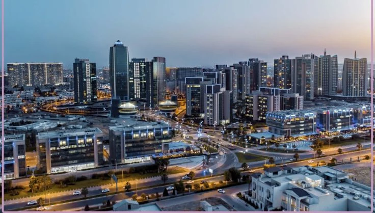

KURDISTAN • BUSINESS • INVESTMENT
One of the oldest continuously inhabited cities in the world and a growing center for business, investment, tourism and regional trade.
Erbil is the capital of the Kurdistan Region of Iraq and one of the Middle East's emerging business destinations. The city has experienced significant development over the past two decades, attracting investment across construction, energy, tourism, retail and professional services.
Its strategic location between Türkiye, Iraq, Iran and the Gulf region supports growing commercial and investment activity.
Trade, services and entrepreneurship.
Construction, retail and regional growth.
Housing, transport and daily expenses.
History, culture and local experiences.
Urban expansion and development projects.
Emerging sectors and future opportunities.
Erbil's history stretches back thousands of years, making it one of the world's oldest continuously inhabited settlements. The city has served as a strategic center of trade and culture throughout history.
Today, modern developments surround its historic core, creating a unique blend of heritage and contemporary growth.
Major sectors include construction, retail, tourism, hospitality, logistics, energy services, telecommunications, education and professional services.
The city continues attracting local and international investors seeking access to regional markets and long-term growth opportunities.
Popular destinations include the Erbil Citadel, Sami Abdulrahman Park, Erbil Bazaar, Shanidar Park, Kurdish Textile Museum and the growing commercial districts throughout the city.
Erbil combines ancient history, Kurdish culture, modern development and a welcoming business environment.
Continued investment in infrastructure, tourism, real estate and commercial development is helping strengthen Erbil's position as a leading business center in the Kurdistan Region.
Its strategic location and growing economy make it an increasingly important city within the wider Middle East.